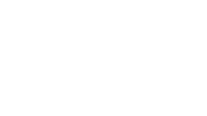

Sistema de Decor Procedural & Modularidade de Cenário Procedural Decor & Modular Environment System
Ferramenta de autoramento e gerenciamento procedural de adereços (decor/props) para cenários. Funciona como uma camada de variação sobre a geometria base das salas, spawnando dinamicamente malhas, armadilhas e Blueprints interativos por quadrante. Procedural decor and prop authoring tool for environments. Acts as a variation layer over base room geometry, dynamically spawning meshes, traps, and interactive Blueprints per quadrant.

Como Funciona & Lógica da Arquitetura How It Works & Architectural Logic
1. Variação Determinística por Quadrante & Seed 1. Deterministic Quadrant & Seed Variation
Em vez de criar dezenas de variações manuais de um mesmo mapa no Editor, cada quadrante seleciona dinamicamente seu módulo visual combinando a Seed global da partida com a posição do quadrante no grid. Isso garante diversidade ambiental massiva com uso mínimo de memória e arquivos de mapa. Instead of manually building dozens of map variations, each quadrant dynamically selects visual modules by combining the match's global Seed with grid positions. This yields high environment diversity with minimal memory footprint.
2. Fluxo de Autoramento via Editor Utility Widget (EUW) 2. Authoring Workflow via Editor Utility Widget (EUW)
Para dar autonomia total à equipe de arte sem depender de código, foi criada uma interface customizada no Editor (EUW_ModulesCreator). Os Environment Artists podem montar layouts de mobílias, armadilhas e pontos de coleta no próprio espaço 3D e salvá-los diretamente na estrutura do ator de gerenciamento (BP_EnvironmentManager). To grant artists full autonomy without code dependencies, a custom Editor UI (EUW_ModulesCreator) was developed. Environment Artists assemble furniture, traps, and loot points in 3D space and save them directly into the manager actor structure (BP_EnvironmentManager).
3. Gerenciamento de Layouts & Edição Não-Destrutiva 3. Layout Management & Non-Destructive Editing
A ferramenta permite aos artistas carregar, selecionar, sobrescrever e visualizar conjuntos (maines) de mobílias em tempo de execução dentro do Editor. Ela isola e limpa os objetos de teste automaticamente, garantindo que o mapa permaneça limpo e otimizado no controle de versão. The tool lets artists load, select, overwrite, and preview prop collections in the Editor. It automatically cleans test objects to ensure maps remain clean and source-control friendly.
4. Hierarquia e Spawning Dinâmico em Tempo de Execução 4. Runtime Dynamic Spawning Hierarchy
No jogo final, a ferramenta é disparada logo após a fase de montagem das salas. Ela lê as tabelas de layouts salvas nos atores de cada quadrante e orquestra o surgimento (spawning) de todos os elementos decorativos e interativos correspondentes de forma automatizada. In-game, the tool executes immediately following room layout assembly. It reads stored layout tables per quadrant and orchestrates automated spawning of all matching decorative and gameplay elements.
Destaques de Produção & Boas Práticas de Pipeline Production & Pipeline Best Practices
- Otimização de Assets e Redução de Duplicata: Asset Optimization & Duplicate Reduction: Evita o consumo excessivo de memória ao reutilizar salas base limpas, alterando apenas a "camada de recheio" (props e gameplay actors) em cada partida. Prevents memory bloating by reusing clean base room geometry and only swapping prop/gameplay layers each match.
- Autonomia e Segurança de Artistas: Artist Autonomy & Safety: O Editor Utility Widget encapsula a complexidade do C++/Blueprint por trás de uma interface amigável, permitindo iterações rápidas e correções fáceis de bugs de layout sem riscos de corromper a lógica procedural principal. The EUW abstracts C++/Blueprint complexity behind a user-friendly panel, enabling fast iterations and layout bug fixes without risking main procedural logic.
- Flexibilidade Visual: Visual Flexibility: Transforma ambientes com a mesma geometria estrutural em salas completamente distintas visual e taticamente (ex: uma sala pode spawnar cheia de armadilhas, enquanto outra variante do mesmo quadrante vira uma sala de baús ou dormitório). Transforms rooms sharing structural geometry into visually and tactically distinct spaces (e.g., a trap room vs. a treasure room variant).